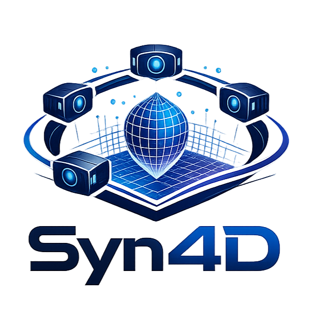

Dense 3D reconstruction and tracking of dynamic scenes from monocular video remains an important open challenge in computer vision. Progress in this area has been constrained by the scarcity of high-quality datasets with dense, complete, and accurate geometric annotations. To address this limitation, we introduce Syn4D, a multiview synthetic dataset of dynamic scenes that includes ground-truth camera motion, depth maps, dense tracking, and parametric human pose annotations. A key feature of Syn4D is the ability to unproject any pixel into 3D to any time and to any camera. We conduct extensive evaluations across multiple downstream tasks to demonstrate the utility and effectiveness of the proposed dataset, including 4D scene reconstruction, 3D point tracking, geometry-aware camera retargeting, and human pose estimation. The experimental results highlight Syn4D's potential to facilitate research in dynamic scene understanding and spatiotemporal modeling.
Each scene in Syn4D is rendered with photorealistic quality from multiple synchronized cameras, capturing diverse dynamic environments and human-object interactions.
Syn4D provides dense ground-truth annotations for every scene, including per-pixel depth, multi-view camera trajectories, dense long-range 3D point tracks, and parametric SMPL-X human pose and shape.
Trained with Syn4D, our geometry-aware multiview generator produces temporally consistent novel views with accurate geometry from a single source video.
| Method | Visual Quality | Camera Accuracy | Geometry Quality | ||||
|---|---|---|---|---|---|---|---|
| CLIP-V | FVD | ATE | RPE-T | RPE-R | CLIP-V-P | FVD-P | |
| Ours (Kubric) | 0.643 | 631 | 0.064 | 0.023 | 0.328 | 0.757 | 229 |
| Ours (Syn4D) | 0.740 | 452 | 0.070 | 0.021 | 0.272 | 0.816 | 139 |
Quantitative evaluation for geometry-aware novel view synthesis on the in-house benchmark of 280 unseen video pairs.
| Method | Sparse Point Tracking | Dense Point Tracking | ||||||
|---|---|---|---|---|---|---|---|---|
| ADT | PStudio | Soviet | Warehouse | |||||
| APD | EPE | APD | EPE | APD | EPE | APD | EPE | |
| 4RC | 87.82 | 0.1480 | 87.32 | 0.1304 | 58.35 | 3.8458 | 79.07 | 0.3302 |
| 4RC (Syn4D) | 89.44 | 0.1258 | 88.10 | 0.1276 | 74.46 | 1.8934 | 88.79 | 0.1915 |
Quantitative evaluation for 3D tracking. Co-training the baseline 4RC with our data yields significant improvements on both sparse and dense 3D tracking under an identical experimental setting.
| Method | Camera Pose Estimation | Multi-View 3D Reconstruction | |||||||||||||
|---|---|---|---|---|---|---|---|---|---|---|---|---|---|---|---|
| Sintel | TUM-dynamics | ScanNet | 7-Scenes | NRGBD | |||||||||||
| ATE | RPE-T | RPE-R | ATE | RPE-T | RPE-R | ATE | RPE-T | RPE-R | Acc | Comp | NC | Acc | Comp | NC | |
| 4RC | 0.144 | 0.053 | 0.430 | 0.010 | 0.008 | 0.314 | 0.032 | 0.012 | 0.437 | 0.034 | 0.051 | 0.783 | 0.036 | 0.034 | 0.912 |
| 4RC (Syn4D) | 0.076 | 0.040 | 0.302 | 0.012 | 0.010 | 0.325 | 0.032 | 0.013 | 0.384 | 0.031 | 0.043 | 0.791 | 0.029 | 0.032 | 0.924 |
Quantitative evaluation for camera pose estimation and multi-view 3D reconstruction. Co-training with our data significantly improves 3D reconstruction performance across all benchmarks while remaining comparable or better on camera pose estimation.
| Method | Align | Sintel | Bonn | KITTI | |||
|---|---|---|---|---|---|---|---|
| Rel | δ < 1.25 | Rel | δ < 1.25 | Rel | δ < 1.25 | ||
| 4RC | scale | 0.311 | 62.2 | 0.051 | 97.4 | 0.076 | 95.2 |
| 4RC (Syn4D) | scale | 0.211 | 74.6 | 0.048 | 97.3 | 0.071 | 95.7 |
| 4RC | scale & shift | 0.249 | 67.0 | 0.048 | 97.3 | 0.058 | 95.5 |
| 4RC (Syn4D) | scale & shift | 0.176 | 76.6 | 0.046 | 97.3 | 0.057 | 95.7 |
Quantitative evaluation for video depth estimation. Metrics reported under both scale-only and scale-and-shift alignments. Co-training with our data improves performance on nearly all datasets across all metrics.
| Method | Hi4D | CHI3D | 3DPW | ||||||
|---|---|---|---|---|---|---|---|---|---|
| MPJPE | PA-MPJPE | PVE | MPJPE | PA-MPJPE | PVE | MPJPE | PA-MPJPE | PVE | |
| MA-HMR | 58.8 | 43.9 | 73.6 | 47.2 | 31.4 | 55.7 | 63.2 | 40.2 | 73.8 |
| MA-HMR + Cont | 58.7 | 44.1 | 73.2 | 46.9 | 31.4 | 55.5 | 63.0 | 40.0 | 73.4 |
| MA-HMR + Syn4D | 57.7 | 43.0 | 72.2 | 46.1 | 31.1 | 54.9 | 62.5 | 39.6 | 72.9 |
Quantitative evaluation for human pose estimation. All metrics reported in millimeters. +Cont denotes continued training on the original datasets; +Syn4D denotes continued training on the original datasets together with our data.
The authors of this work were supported by Clarendon Scholarship, NTU SUG-NAP, NRF-NRFF17-2025-0009, ERC 101001212-UNION, and EPSRC EP/Z001811/1 SYN3D.
We thank Kelvin Li, Runjia Li, Ruining Li, Yiming Chen, and Minghao Chen for helpful suggestions and discussions. We also thank Angel He for proofreading.
@misc{jiang2026syn4d,
title={Syn4D: A Multiview Synthetic 4D Dataset},
author={Zeren Jiang and Yushi Lan and Yihang Luo and Yufan Deng and Zihang Lai and Edgar Sucar and Christian Rupprecht and Iro Laina and Diane Larlus and Chuanxia Zheng and Andrea Vedaldi},
year={2026},
eprint={2601.05251},
archivePrefix={arXiv},
primaryClass={cs.CV},
}